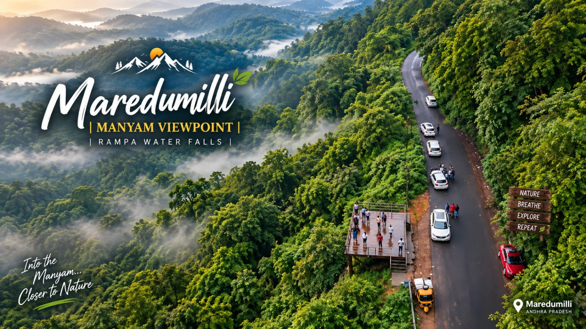
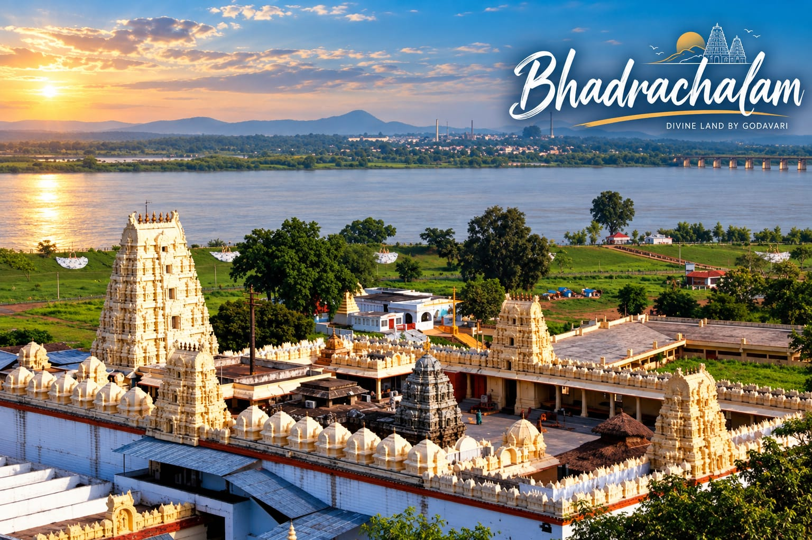
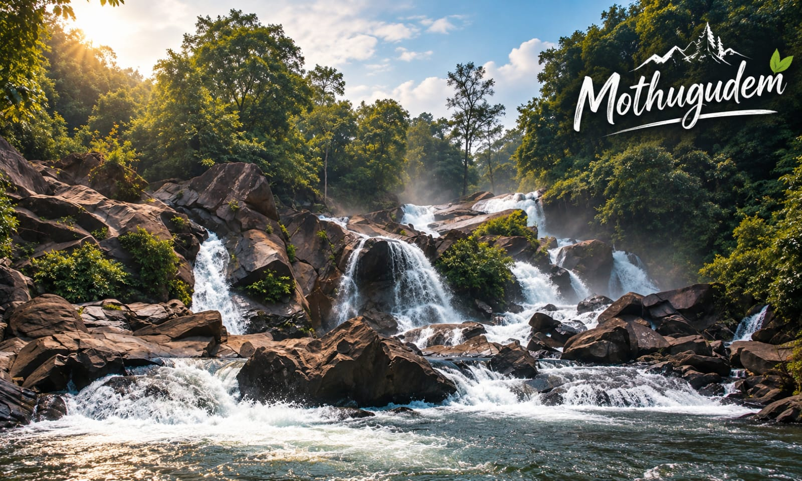
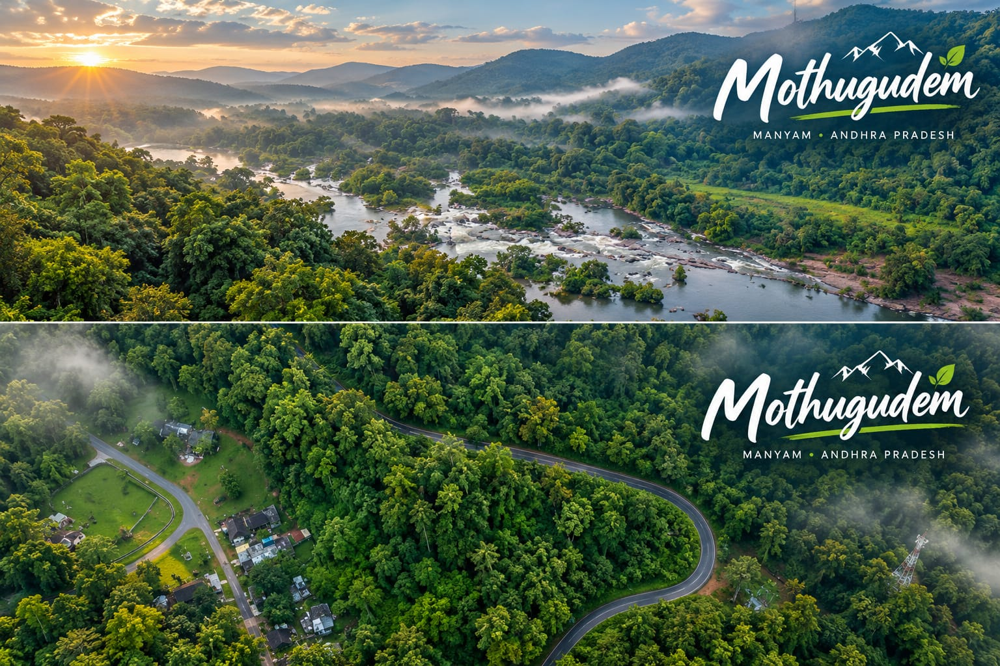
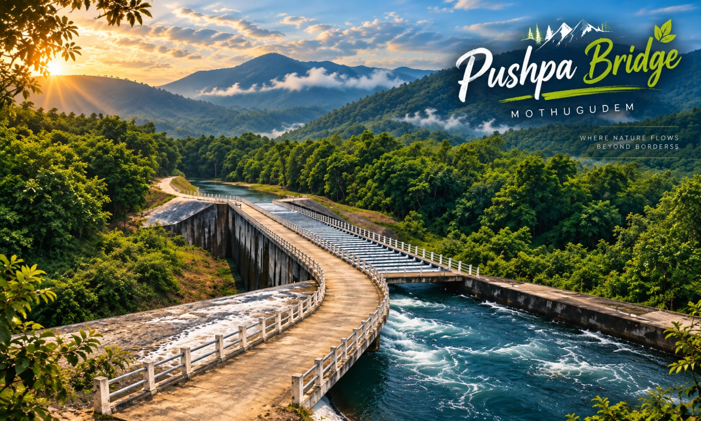
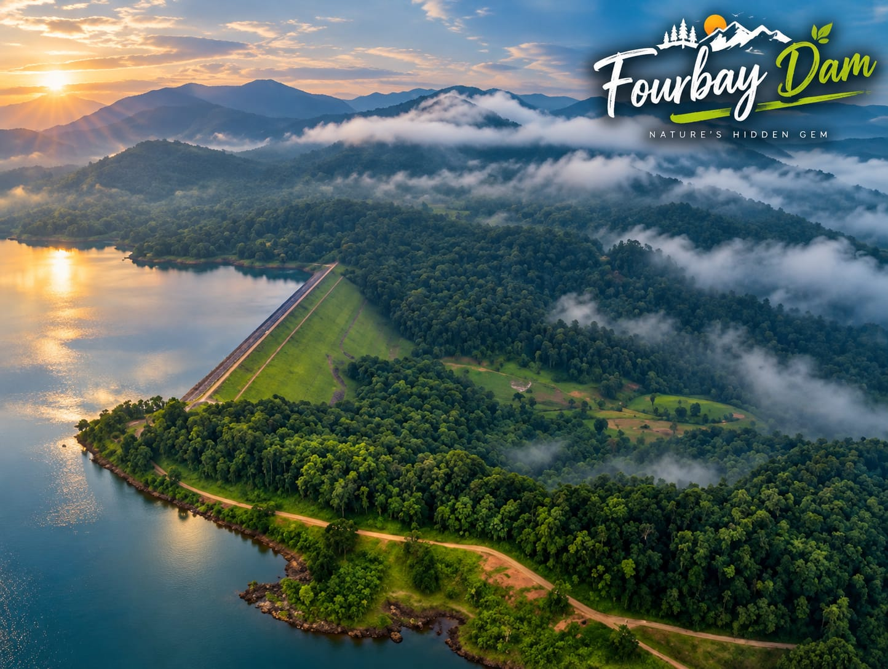
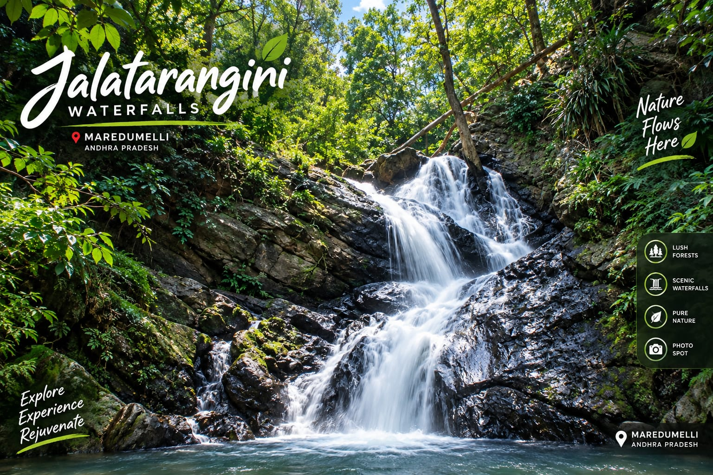
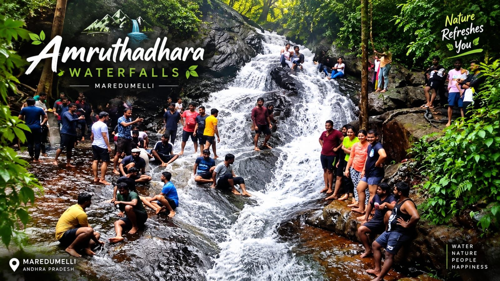
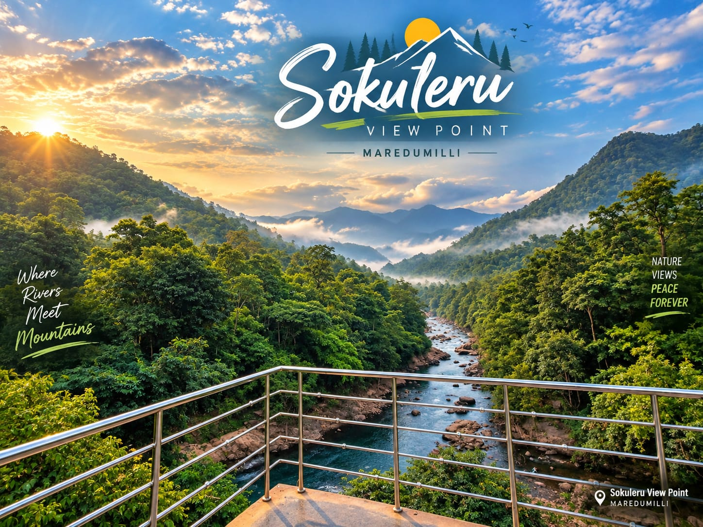
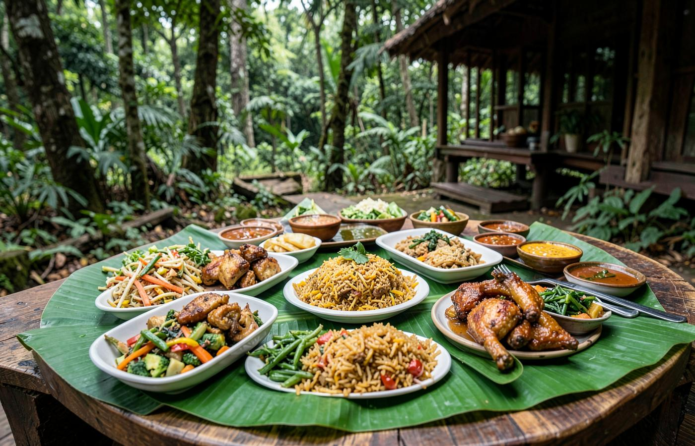

2 DAYS • MAREDUMILLI & MOTHUGUDEM
Into the Wild.
Closer to Nature.
Discover misty hills, waterfalls, forest roads, viewpoints and the peaceful beauty of Andhra Pradesh with a memorable two-day journey from Bhadrachalam.
📍 Pickup from Bhadrachalam / Bhadrachalam Road Railway Station
Duration2 Days / 1 Night
PickupBhadrachalam
ExperienceForest • Hills • Falls
Travel StyleComfortable & Scenic
THE SIGNATURE ESCAPE
Maredumalli & Mothugudem
2 Days Package
A carefully planned nature trip combining the spiritual charm of Bhadrachalam with the forests and waterfalls of Manyam.

Nature's Hidden Gem
Bhadrachalam→Mothugudem→Maredumalli
A refreshing escape through the Eastern Ghats
Start early from Bhadrachalam, freshen up at the arranged hotel and optionally visit Lord Rama Temple. Then continue towards Mothugudem and Maredumalli through scenic forest roads, streams and viewpoints.
01
Pickup & Fresh-upMorning pickup and hotel fresh-up arrangement.
02
Temple VisitOptional visit to the famous Lord Rama Temple.
03
Forest JourneyTravel through lush landscapes towards Mothugudem.
04
Waterfalls & ViewpointsExplore the region's most scenic nature spots.
PLACES YOU'LL EXPERIENCE
Journey through Manyam
Every stop brings a different view — reservoirs, rivers, forests, waterfalls and mountain roads.



YOUR TWO-DAY PLAN
Simple. Scenic. Memorable.
Start from Bhadrachalam and spend two days exploring the best nature experiences around Maredumalli and Mothugudem.
DAY01
BHADRACHALAM → MOTHUGUDEM
Temple, Breakfast & Forest Journey
Pickup
Pickup at Bhadrachalam or Bhadrachalam Road Railway Station.
Fresh-up
Hotel arrangement for fresh-up and getting ready for the journey.
Lord Rama Temple
Optional visit to the temple before starting the forest route.
Journey to Mothugudem
Scenic road journey with breakfast provided on the way.
Nature Exploration
Explore selected viewpoints, river landscapes, bridges and waterfalls around the route.
DAY02
MAREDUMALLI EXPERIENCE
Waterfalls, Viewpoints & Return Journey
Forest Breakfast
Enjoy a fresh morning surrounded by the greenery of Manyam.
Jalatarangini Waterfalls
Relax beside the flowing water and capture beautiful forest memories.
Sokuleru View Point
Take in the panoramic valley and river views from the viewpoint.
Amruthadhara Waterfalls
Experience another beautiful waterfall surrounded by lush forest.
Return Journey
Complete the nature trip and begin the return journey with unforgettable memories.
HIGHLIGHTS
See it. Feel it. Live it.

WATERFALL
Jalatarangini
Forest, flowing water and a peaceful natural setting.

WATERFALL
Amruthadhara
A refreshing stop where water and greenery meet.

VIEWPOINT
Sokuleru
Mountain valleys, river views and a spectacular sunset mood.
LANDMARK
Pushpa Bridge
A scenic bridge experience surrounded by forest and water.
TRAVEL MEMORIES
Nature through your lens

TASTE THE JOURNEY
Good food tastes
better in nature.
Enjoy delicious food during the journey and take a break surrounded by the calm of the forest.
READY FOR THE JOURNEY?
Let the road lead you
to Maredumalli.
Plan your 2-day Maredumalli & Mothugudem escape with Punnami Tourism.